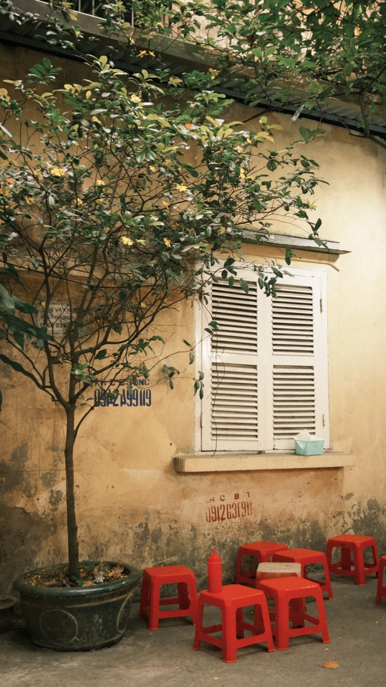

오토바이로 주차 자리에서 안전하게 나오는 법

주행의 처음 몇 미터는 가장 좁은 곳에서 시작되는 경우가 많습니다: 주차된 오토바이, 보행자, 달리는 차량 사이. 시동을 걸자마자 출발하지 마세요. 먼저 오토바이를 준비하고, 시야를 확인한 뒤 도로에 합류하세요.
시동 걸기 전
헬멧을 쓰고 끈을 채우고, 휴대폰을 넣고, 가방을 고정하고, 스탠드가 올라갔는지 확인하세요. 바퀴 주변을 보세요: 자물쇠, 봉지, 낮은 장애물이 있을 수 있습니다. 빽빽한 줄에서는 시동을 끈 채 걸어서 빼내는 것이 더 안전할 때가 많습니다.
양쪽을 확인
미러가 도움이 되지만 벽, 차, 대문이 사각지대를 만듭니다. 인도 끝까지 천천히 가서 멈추고 양쪽을 보세요. 차뿐 아니라 도로 가장자리 가까이 움직이는 오토바이, 자전거, 보행자도 고려하세요.

인도는 보행자의 것
인도에서 속도를 내지 말고 경적으로 길을 비키라고 요구하지 마세요. 사람, 아이, 유모차를 먼저 보내세요. 출구에 높은 턱이나 젖은 타일이 있다면 거의 똑바로, 장애물 위에서 급가속이나 급제동 없이 지나가세요.
흐름에 합류하는 법
- 다른 사람이 급제동하지 않아도 될 만큼 충분한 틈을 고른다.
- 방향지시등으로 방향을 알린다.
- 고개를 짧게 돌려 사각지대를 한 번 더 확인한다.
- 부드럽게 출발하고 예측 가능한 궤적을 잡는다.
- 합류 후 급가속 없이 흐름의 속도에 맞춘다.
적당한 틈이 없으면 계속 기다리세요. 다른 운전자의 신호가 항상 길이 완전히 비었다는 뜻은 아닙니다 — 실제 상황을 보고 스스로 판단하세요.
뒤로 빼서 나오기
스쿠터에는 후진 기어가 없으니 주차를 미리 계획하세요. 나갈 때 걸어서 뒤로 빼낸 뒤 도로를 향한 상태에서 출발할 수 있게 세우는 것이 좋습니다. 무거운 오토바이를 밀면서 휴대폰을 들고 흐름까지 살피려 하지 마세요.
밤과 비
나가기 전에 라이트를 켜고 바이저와 미러를 닦으세요. 젖은 타일에서는 발과 바퀴가 미끄러질 수 있고, 운전자는 어두운 마당에서 나오는 오토바이를 늦게 봅니다. 더 오래 기다리고, 거리가 익숙해 보인다는 이유만으로 차량 앞에 끼어들지 마세요.
짧은 결론
안전한 출차는 준비된 오토바이, 시야 경계에서의 정지, 흐름 속 충분한 틈입니다. 처음 몇 초를 서두르지 마세요. 시야 설정은 미러 글에, 도심 주차는 냐짱 주차에 있습니다.